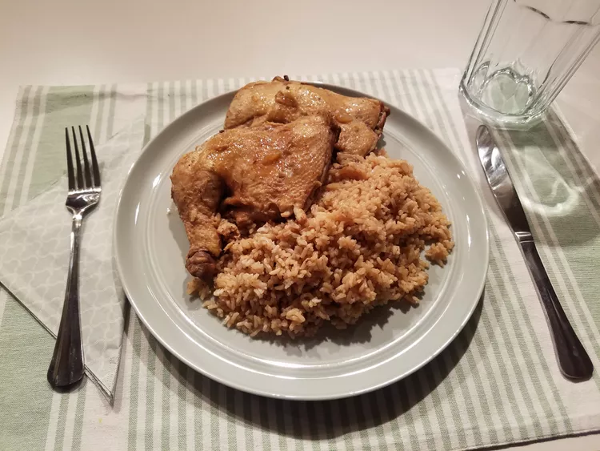

Return Home
Chicken Adobo

Description
This is a family favorite from the Philippines and is served over rice. Easy to prepare, especially when you are in a hurry.
Ingredients
- 5 pounds chicken legs and thighs, rinsed and patted dry
- ¾ cup water
- ¾ cup white vinegar
- ¼ cup soy sauce
- 1 teaspoon white sugar
- 1 onion, chopped
- 2 cloves garlic, crushed
- 1 teaspoon whole black peppercorns, crushed
- 2 bay leaves
- salt to taste
Steps
- Place the chicken in a 6-quart pot. Pour the water, vinegar, and soy sauce over the chicken. Add the sugar, onion, garlic, peppercorns, and bay leaves to the pot; bring the mixture to a boil for 2 minutes. Reduce heat to low; simmer until the chicken is no longer pink at the bone and the juices run clear, about 30 minutes. An instant-read thermometer inserted into the thickest part of the thigh, near the bone should read 180 degrees F (82 degrees C). Remove the chicken from the pot and continue cooking the sauce until it thickens, about 10 minutes; season with salt.
- Return the chicken to the pot, making sure the chicken is covered entirely by the sauce. Cook together until the chicken is reheated, about 3 minutes.